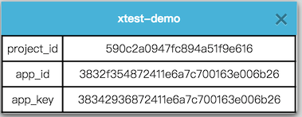

2. 新手快速使用¶
2.1. 使用步骤¶
本方提供了基于 Python的Pyunit的Demo程序，大家只需要登录xtest系统，修改配置信息即可运行使用。
2.2. 客户端Demo¶
Demo地址：
https://git.oschina.net/x-utest/xtest-python-demo.git
登录xtest系统，可以查找自己项目配置查找：
点击项目的菜单：

查看指定配置：
在文件 demo.py 中替换掉原有的配置：
# todo 在系统中注册了,组织信息中看到这个值,替换到此处
project_id = '590c2a0947fc894a51f9e616'
app_id = '3832f354872411e6a7c700163e006b26'
app_key = '38342936872411e6a7c700163e006b26'
然后运行程序(基于python3.5及以上) ：
python demo.py
运行结果如下：
(py3venv) harmo@harmo-pc:~/work/workspace/xtest-python-demo$ python demo.py
FFF...
======================================================================
FAIL: test_first_hello_world_false (__main__.MyTestDemo)
用户不应该越权访问资源
----------------------------------------------------------------------
Traceback (most recent call last):
File "demo.py", line 65, in test_first_hello_world_false
self.assertTrue(False, msg='Hello Word是失败的')
AssertionError: False is not true : Hello Word是失败的
======================================================================
FAIL: test_first_hello_world_false2 (__main__.MyTestDemo)
此处用户操作太多内容了
----------------------------------------------------------------------
Traceback (most recent call last):
File "demo.py", line 71, in test_first_hello_world_false2
self.assertTrue(False, msg='Hello Word是失败的')
AssertionError: False is not true : Hello Word是失败的
======================================================================
FAIL: test_first_hello_world_false3 (__main__.MyTestDemo)
这个用户不是超级管理员
----------------------------------------------------------------------
Traceback (most recent call last):
File "demo.py", line 77, in test_first_hello_world_false3
self.assertTrue(False, msg='Hello Word是失败的')
AssertionError: False is not true : Hello Word是失败的
----------------------------------------------------------------------
Ran 6 tests in 0.000s
FAILED (failures=3)
{"code":200,"msg":"success","data":""}
其中，最后的：
{"code":200,"msg":"success","data":""}
的 success 表明上传报告服务器成功
执行完毕后，即可在自己的 xtest系统 界面看到相应的报告，并进行分享